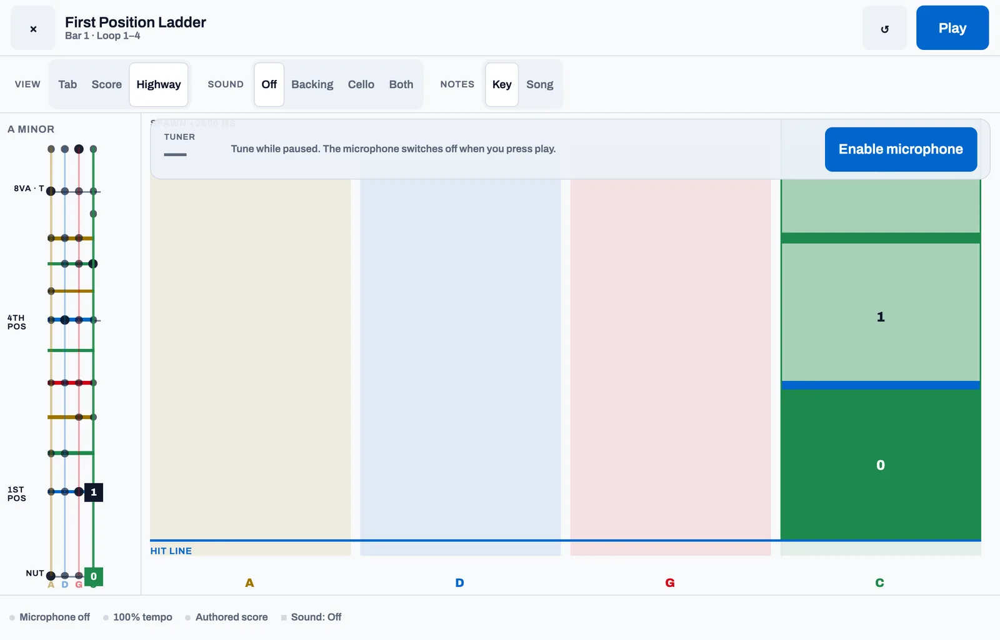

Three ways to read
Tab, score or highway — same music, your choice
Finger numbers on four string lines, engraved bass-clef notation with fingerings, or a highway of notes falling towards the hit line in four string-coloured lanes. The fingerboard beside it lights the note you are playing, on your tapes.


